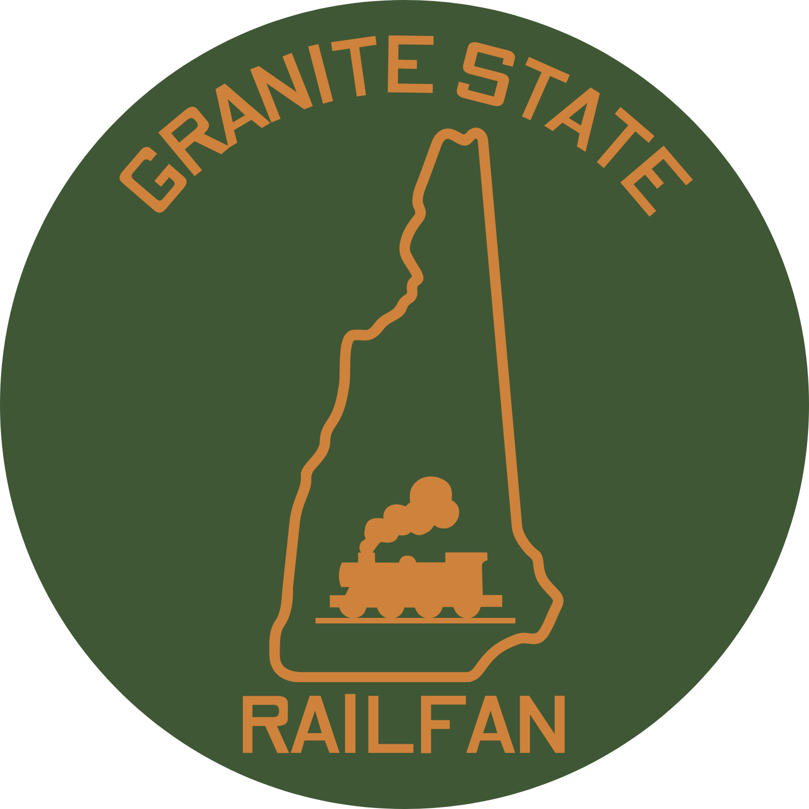

Railroad Photography
Capturing freight trains, passenger operations, historic locomotives, and scenic railroad locations across the region.

Railroad photography and videos from New Hampshire and across New England.
Granite State Railfan is a personal railfanning project focused on documenting trains, railroad history, and modern rail operations throughout New Hampshire and New England.
Capturing freight trains, passenger operations, historic locomotives, and scenic railroad locations across the region.
High-quality railfan videos featuring locomotive action, crossing scenes, station activity, and seasonal railroad operations.
Dedicated to the railroads of the Granite State, from Amtrak's Downeaster to local short lines and heritage railroads.
Come along for the 470 Club Excursion on the Conway Scenic Railroad.
 Watch on YouTube
Watch on YouTube
November 7, 2026 · Crawford Notch, New Hampshire
Photo run-bys from a day aboard the Conway Scenic Railroad’s annual 470 Club Excursion.
Watch the video